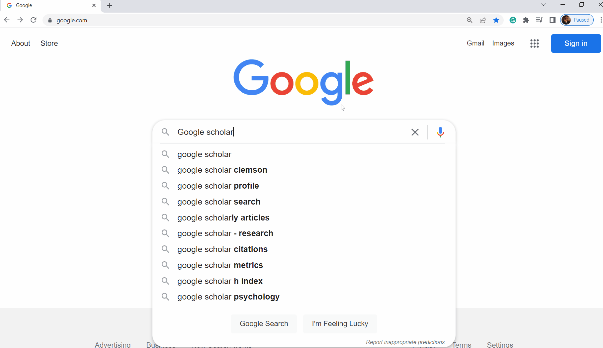

Task 3#
Almost time to graduate!
Write your conclusion report following the template, Task 3: The Conclusion:

To gauge the level of detail evaluators typically expect, review these task 3 examples.
Writing Task 3#
Most of task 3 will update task 2 from the future to the past tense. As such, task 3 should be similar in length and detail to task 2. Review the task 3 examples to understand what evaluators expect. Differences between tasks 2 and 3 are highlighted in the task 3 template and discussed in the video. You must update task 2 as follows:
Update the title page, TOC, headers, and footers.
Rewrite corresponding sections from task 2 in the past tense adjusting as necessary following the task 3 rubric. All dates should be in the past.
Section B: Other Works must have three new sources different from those in section B of task 2.
Write section G: Unanticipated Requirements.
For section H: Conclusion, revise Outcomes from task 2, discussing the results and effectiveness of the completed project.
For section I: Project Deliverables](task3:I), add examples of deliverables to the appendices.
Following APA guidelines, check grammar and sources, export as a pdf, and submit.
Submit, pass, and graduate!
Warning
Submissions with missing sections are automatically returned. If everything went as planned, explain why. The narrative following the Timeline and an Unanticapted Requirements section is still required.
Section A: Overview#
Include an overview of the project’s client, setting, problem, proposed solution, and how the solution was carried out. The details should include all the major aspects that were accomplished.
You can combine and revise Task 2 sections A1, A2, and A3, adjusting for any variances and providing a summary of the completed project. In addition, you can reuse any content from related task 3 sections C and D. As this section often combines and revises Task 2 Sections A1, A2, and A3; it is typically of similar length.
Tip
Write this section last or return to it after writing the Conclusion.
The required depth of detail is up to the subjectivity of the evaluator. Though summaries are typically short, there is no penalty for too much detail.
Section B: Other Works#
The requirements for this section are identical to that of task 2 section B -only you must have three works different from those in task 2 cited following APA guidelines, e.g., (Author year).
Content from part B of task 2 can be included, but cannot satisfy the task 3 requirements. So cite the task 2 sources if needed elsewhere, but it is recommended to not include the task 2 sources in this section.
Section C: Changes to Project Environment#
Using task 2 sections D and E from task 2, describe how your project changed the client’s environment.
As a convenience to the evaluators, you may copy content from your Task 2 section D labeling it as Original Environment, and then add new material (a paragraph typically suffices) describing how the project changed the original environment. For example:
Original Environment:
Company X currently is using out-of-date Linksys WRT54GL wireless routers as Wi-Fi access points. As a result…
After the project was completed, the outdated Linksys WRT54G was replaced with…
Section D: Methodology#
Adding any variations, revise task 2 section E from task 2 from the future to the past tense.
Section E: Project Goals and Objectives#
Discuss how completed goals and objectives from task 2 section F were met. If any goals or objectives were not met, discuss why.
For this section,
Provide a table indicating which project goals and objectives were met.
Separate from the table, describe how each completed goal and objective were met. For those not met, describe why.
Goals, Objectives, and Deliverables Table
Goals Met Objectives Met 1. Goal 1 1. a. Objective 1.a 1. b. Objective 1.b 2. Goal 2 2.a. Objective 2.a 2.b. Objective 2.b 2.c. Objective 2.c ... ... ... ...
Goals and Objectives Descriptions
- Goal 1: Description of how the goal was met.
- Objective 1.a: ;Description of how the objective was met.
- Objective 1.b: ;Explanation of why the objective was not met.
- Goal 2: Description of the how the goal was met
- Objective 2.a: Description of how the objective was met.
- Objective 2.b: Description of how the objective was met.
- ...
Section F: Project Timeline#
Update the timeline table from task 2 section G with columns for Planned Duration, Actual Duration, Actual Start Date, and Actual End Date.
Milestone or Deliverable
Planned Duration
Actual Duration
Actual Start Date
Actual End date
Some milestones
7 days
7 days
7/23/2022
7/30/2022
Some deliverables
14 days
10 days
7/18/2022
7/28/2022
\(\vdots\)
\(\vdots\)
\(\vdots\)
\(\vdots\)
\(\vdots\)
Note
All dates must be in the past. Task 3 is a conclusion report. Write as if you recently completed the project -even if the dates do not align with the task 2 projected end dates. Evaluators understand this is a written exercise, and academic timelines rarely sync with real-world timelines. See the FAQ for more details.
Following the updated timeline, write a narrative explaining any differences from the projected proposal timeline, task 2 section G. If there were no variances, explain why.
Warning
Do not leave this section blank. It is easy to overlook, but submissions with no timeline narrative will not be accepted.
Section G: Unanticipated Requirements#
Describe any unanticipated requirements and how you dealt with them. You should repeat anything from the narrative section of Task 3 section F. If everything went as planned (which is a tad unrealistic), explain why. Do not leave this section blank.
Section H: Conclusion#
Summarize the results and potential effects of your completed project compared to the expected outcomes outlined in task 2 section H.
Deliverables#
Appendices#
In the appendices you must include at least two things you created that demonstrate the project’s completion. The included items need only be examples of actual deliverables. They can be fabricated entirely, examples, or parts of actual deliverables. This section should be included at the end of the document.
Tip
If reusing materials from an open source or actual project, mask any identifying information.

Accepted items include the following:
Code or script samples
Screenshots of deliverable
Process diagrams such as flowcharts or UMLs
Visualizations such as charts, tables, or graphs
Network diagrams
Training certificates/questions
The technical IT product
Section I: Project deliverables#
Describe each deliverable in the appendices and how it demonstrates evidence of project completion. Refer directly to the corresponding items by its appendix, e.g., “under Appendix A”, so readers can easily identify which appendix is being described.
Grammar, Sources, and APA#
It’s easy to overlook them when focusing on content, but grammar, sources, and APA formatting are the most common reasons for rejected submissions!
Check your grammar using Grammarly.com  (it’s what the evaluators use). Style is not assessed (Grammarly marks these in blue, green, or purple), but even a few grammar errors (marked in red) will prevent competency in Professional Communication. The free side has been sufficient, but if using the online app, you sometimes need to wait before mistakes are caught.
(it’s what the evaluators use). Style is not assessed (Grammarly marks these in blue, green, or purple), but even a few grammar errors (marked in red) will prevent competency in Professional Communication. The free side has been sufficient, but if using the online app, you sometimes need to wait before mistakes are caught.
Warning
Students have reported missed mistakes when using the Google doc Grammarly extension. Therefore, we advise copying content directly into the app or purchasing the premium version compatible with MS Word.
Sources and format should follow APA \(7^{\text{th}}\) edition guidelines. Outside of grammar mistakes, most APA errors involve formatting of the sources or in-text citations. In-text citations should be of the form, (Author, year). For more details, see APA guidelines for citations.
Avoid reference errors by using a referencing tool:
MS Word Reference Tool \(\leftarrow\) desktop version only.
JabRef \(\leftarrow\) free and works on most platforms.
LibreOffice Reference Tool. - Download LibreOffice for free.
Get the best help from the WGU Academic Coaching Center.
FAQ#
What are the most common reasons task 3 does not pass?#
The most common reasons for returned task 3’s:
Grammar
Sources
No narrative for part F, Project Timeline.
Insufficient details for section X.
1-3 is easily avoidable. Being cited for “insufficient details” is a matter of subjectivity, but it is also easy to fix -just add more details. Since task 3 mostly implements the already passed plan of task 2 -it is mostly already passed.
How long should task 3 be?#
Review the task 3 examples. As task 3 mainly rewrites task, task 3 is typically similar in length. They will assess task 3 independently of task 2. Don’t assume they’ll compare the two.
My capstone is not a real project. What do I do for the deliverables?#
See section I. You only need to provide examples of actual deliverables you might provide to clients demonstrating a project’s completion.
My task 2 timeline has projected end dates of 6 months (since this is what it would take), but I just submitted task 2 and need to complete task 3 now. What should I do?#
Evaluators understand this is a written exercise, and academic timelines rarely sync with real-world timelines. Write as if you recently completed the project -dates do not need to align with those in task 2, but the task 3 start and end dates must be in the past. For example, if task 2 had the following:
Milestone or Deliverable |
Duration |
Projected Start Date |
Projected End date |
|---|---|---|---|
Some milestones |
7 days |
7/23/2023 |
7/30/2023 |
Some deliverables |
14 days |
7/16/2023 |
7/30/2023 |
\(\vdots\) |
\(\vdots\) |
\(\vdots\) |
\(\vdots\) |
But task 3 was submitted on 4/28/2023, it might be adjusted by moving back dates such that the timeframes are preserved as follows:
Milestone or Deliverable |
Planned Duration |
Actual Duration |
Actual Start Date |
Actual End date |
|---|---|---|---|---|
Some milestones |
7 days |
7 days |
4/21/2023 |
4/28/2023 |
Some deliverables |
14 days |
14 days |
4/14/2023 |
4/28/2023 |
\(\vdots\) |
\(\vdots\) |
\(\vdots\) |
\(\vdots\) |
\(\vdots\) |
The narrative following the timeline can then explain that the project started earlier than expected (even if these dates preceded task 2’s submission).
I’ve completed task 3, but task 2 is still in the assessment queue. Should I wait until task 2 passes submitting task 3?#
If you’re nearing the end of your term, you should submit task 3 as soon as it’s ready. If task 2 gets returned, task 3 will also automatically be returned. However, if it passes, task 3 will keep its place in the assessment queue.
My task was returned for “In-text citations could not be found…”#
My task two was returned for sources stating:
“In-text citations could not be found for portions of the task that have been quoted or paraphrased… “ What does this comment mean?
This comment indicates they could not find a matching in-text citation for every source on your reference list. Check that each reference has a match following APA style, e.g., (Author, year), and remove any references without matches. Use a referencing tool to create, manage references, and avoid such errors. Follow the in-text citations and the reference page format of the tasks 2 and 3 examples.
C769 Resources#
Examples#
These examples are on-par with average passing tasks. Use them as a guideline for what evaluators accept in fulfillment of the requirements.
Excellence Archive#
The Capstone Excellence Archive includes a wide range of completed conclusion reports (task 3). When reviewing archived capstones, keep in mind that they all are, by definition, above and beyond the requirements. Therefore, do not use these as examples of what’s needed to meet the requirements. For a more down-to-earth example of what’s required, see the above Examples section. Note that the archive has all recognized C769 capstones are categorized as BS Information Technology regardless of degree emphasis.
Grammar, Sources, and APA#
WGU Coaching Center Writing Help#
Grammar#
Check your grammar using Grammarly.com  (it’s what the evaluators use). Style is not assessed (Grammarly marks these in blue, green, or purple), but even a few grammar errors (marked in red) will prevent competency in Professional Communication. The free side has been sufficient, but if using the online app, you sometimes need to wait before mistakes are caught.
(it’s what the evaluators use). Style is not assessed (Grammarly marks these in blue, green, or purple), but even a few grammar errors (marked in red) will prevent competency in Professional Communication. The free side has been sufficient, but if using the online app, you sometimes need to wait before mistakes are caught.
Warning
Students have reported missed mistakes when using the Google doc Grammarly extension. Therefore, we advise copying content directly into the app or purchasing the premium version compatible with MS Word.
Get the best writing help from the writing experts: WGU Writing Center. While Writing Center Instructors cannot say whether a task will pass, they can help you revise your paper to meet WGU competency standards for professional communication, sources, and APA formatting. The Writing Center also offers live Q & A sessions covering a variety of topics which include general writing and grammar help. See a list of upcoming events here: Writing Center Live Events
Sources and APA formatting#
Sources and format should follow APA \(7^{\text{th}}\) edition guidelines. Outside of grammar mistakes, most APA errors involve formatting of the sources or in-text citations. In-text citations should be of the form, (Author, year). For more details, see APA guidelines for citations and APA guide for missing reference information.
Avoid reference errors by using a referencing tool:
MS Word Reference Tool \(\leftarrow\) desktop version only.
JabRef \(\leftarrow\) free and works on most platforms.
LibreOffice Reference Tool. - Download LibreOffice for free.
General Resources#
Student Resources#
Academic Coaching Center. The Coaching Center provides help with writing, Microsoft products, tech, math, and more!
Webinars and Cohorts#
5 days to Finish C769 Task 2 Challenge Cohort#
Keep an eye out for the 5 Days to Finish Task 2 Challenge Cohort. You will usually see the enrollment on Mondays in the course of study in the section Labeled Explore Cohort. The Explore Cohort section will not be seen once enrollment is closed. It will start on Wednesdays and will kick off with a live webinar at 7 PM ET. Each day of the cohort I will email support for a section or 2 of the proposal (task 2) to help you finish within 5-10 days. Most tend to finish in 10 days.
Email Candice Allen ugcapstoneit@wgu.edu for more information or questions.
WGU Academic Coaching Center Live Events#
Libraries#
Tip
You can search WGU’s library and other open-source libraries using google.scholar.com Go to >’Google.scholar>setting>libraires>’ and then add WGU and other libraries.
Welcome Email#
We’ve tried to provide everything you need here on this website as a more complete and readily available resource than the “welcome email,” i.e., the non-automated introductory email from your assigned course instructor containing the tips and resources needed to get started in the right direction. However, we often get asked for the email, and I suppose this website would be incomplete without it. So here is an example of a “welcome email.”
A Welcome Email
Welcome to C769! See the C769 IT Capstone website for almost everything you need. To understand what the capstone requires (and does not require), start here and watch these videos: Project Idea and Task 2: Proposal Overview. Your first step is choosing a topic; we recommend a topic proposing a technical solution to a problem -avoiding those that deliver only information (i.e., assessments, policies, plans, training, etc.). Though they often need reframing to fit the capstone requirements, past or present work projects make great capstone topics. The capstone project can be very similar to your C850 Emerging Technologies project -only here you get to choose the client and problem to solve.
Any IT project is allowable provided it has the following:
A specific client and IT problem (you can fabricate a client whose problem needs your chosen solution.)
The implementation of a hard IT deliverable (software or hardware) that helps solve that problem. This is a wholly written exercise (an actual project is not required), but fabricated projects must be written as realistically as possible from reality. While it may need some revising, you can reuse any of your professional or academic work.
Understand what the project requires and doesn’t require! Watch Project Idea and all the Task 2 Videos (they are short). Then review these examples of actual passing projects.
Write the topic approval (task 1) following the Approval Form Template. This document only needs to be an outline of your proposed project. Changes from task 1 to task 2 are allowed and typical; evaluators will not rigorously compare tasks 1 and 2.
Check the IRB statement and email the completed form to your assigned course instructor for signature. Appointments before approval are not required but are encouraged if you have concerns.
Afterward, you can start working on Task 2.
Pacing Guide#
Normal |
Accelerated |
Instructions/Steps |
|---|---|---|
Week 1 |
Days 2-3 |
Follow the steps in the Task 1 Guide.
|
Week 2 |
Days 4-8 |
Follow the steps in the Task 2 Guide.
|
Week 3 |
Days 9-13 |
Continue following the Task 2 Guide.
|
Week 4 |
Day 14+ |
Follow the steps in the Task 3 Guide.
|
Warning
Be aware that task 2 and 3 evaluations often take the full three days. Therefore, if you are approaching the end of your term, don’t wait on task 2 to start task 3 and submit task 3 early enough to have it returned, revised, and resubmitted.
Accelerated Plan#
Nearing the end of your term? Plan accordingly:
Course Faculty#
One of your most important resources is your assigned C769 instructor, who will actively monitor your progress and offer one-on-one advice. Your instructor can discuss your progress, help you understand and fulfill the requirements, give you tools to successfully navigate the capstone, and help you revise returned submissions. Throughout your engagement with this course, it is expected that you continue communicating with your program mentor. Your program mentor will help you set weekly study goals, recommend specific learning materials, and tell you what to expect in this course and how it aligns with your program’s competencies.
Note
Approval forms should be sent to your assigned course instructor. If they are out of the office for more than two days or no instructor has yet assigned, contact: ugcapstoneit@wgu.edu
Candice Allen#
{kind=link}
Candice Allen has worked for WGU over ten years. Before coming to WGU she taught a mixture of IT fundamental courses and business courses at post secondary colleges in Northwest Indiana and online. She graduated with her bachelor’s degree from Purdue University and has two master’s degree (IDOL and MSIS). She attended Capella University and AIU to obtain her master’s degree. Currently she is a course instructor for the College of IT.
Jim Ashe#

Dr. James Ashe is a dedicated math, computer science, and statistics teacher with over 20 years of experience teaching in an online, large university, small college, HBCU, and community college setting. In 2016, he joined WGU to help students in the newly created Math Center. In 2018 Jim joined IT to contribute to the new Computer Science program. Currently, he supports the IT, data analytics, and computer science capstone. Though his research studied abstract objects, experimentation, creating examples, and producing necessitated a lot of coding. It was here that he developed a love for programming and computer science. He has a Ph.D. and MS in mathematics from the University of Tennessee and a BS in history with a minor in art from East Tennessee State University. Jim and his wife reside in Asheville, NC, with their four children, four cats, a dog, and an undetermined number of chickens. In his nonexistent spare time, he enjoys reading and kayaking.
Jeff Davis#
{kind=link}
Jeff Davis joined WGU in 2013 and currently serves as an Instructor in the College of IT. Jeff holds a Master’s degree in Information Systems and a Bachelor’s degree in Information Technology along with multiple IT certifications. Prior to becoming an Instructor, Jeff was a Senior Program Mentor at WGU. He has also taught Business and IT college courses and has over 20 years experience working in multiple IT roles. Jeff is also proud to be a U.S. Air Force veteran.
Tawnya Lee#
{kind=link}
Tawnya has been with WGU 2013. Prior to WGU, Tawnya worked for over 12 years as a web developer, coding in .NET and PHP. She also ran her own web design business, serving small to medium-sized businesses. Education is her passion She is committed to seeing every student achieve their goal of earning their degree. She has two Master’s, one in Science and another in Instructional Design. She is a member of Delta Mu Delta.
Charlie Paddock#
{kind=link}
Dr. Charles Paddock received his BS in Business from the University of New Orleans. Following a tour of duty in the Air Force, he returned to school and received his MBA concentrating in Systems and Operations Management and Ph.D. in Management Information Systems, both from the University of Houston. Charles previously taught at Arizona State University and The University of Nevada, Las Vegas and worked in the Research Centers of both Universities as a consultant to their corporate members. Charles joined WGU in February of 2006 and now lives in Salt Lake City, UT.